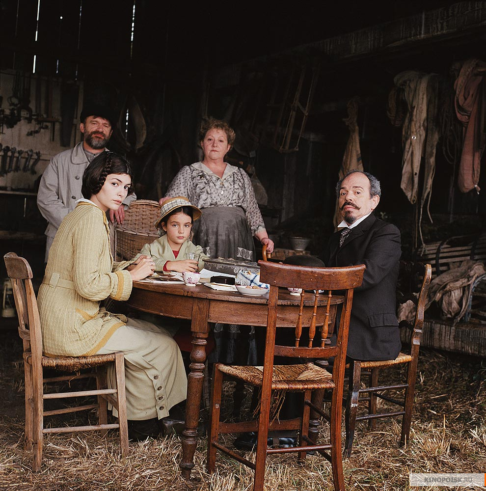

Welcome to myПодборка фильмов
Making It happen
Небольшая подборка фильмов от меня на случай, если больше нечего смотреть.
Фильмы
Любовное настроение
In the Mood For Love
Узнать большеЛюбовное настроение
In the Mood For Love, 2000
Гонконгская артхаусная мелодрама 2000 года режиссёра, сценариста и продюсера Вонга Карвая, получившая признание публики и множество профессиональных наград.
Действие фильма происходит в Гонконге в 1960-х годах. Журналист Чоу Мо Вана и Су Ли Жен в один и тот же день въезжают в две соседние комнаты в доходном доме.
Мистер Чан постоянно находится в отъезде, а миссис Чоу каждый день задерживается на работе. Со временем оказывается, что между ними роман, а их супруги будто бы вынуждены проводить время вместе, пытаясь угадать, в какой же момент что-то пошло не так.
В сущности, это все, что происходит в фильме, остальное — чистая поэзия, как и в большинстве фильмов режиссера. «Любовное настроение» снимали излюбленными методами Карвая: на пленку, без четкого сценария и репетиций, полагаясь на интуицию и импровизацию. Интересно, что изначально фильм задумывался как история о женщине и мужчине, которые делятся лапшой и секретами. В итоге поменялось и название, и сюжет, а вот еда и секреты остались.
Образ главной героини, созданный Чжаном, стал культовым. «Она так одевается, чтобы выйти купить лапшу?» — в который раз удивляется дотошная соседка. Облегающее стройную фигуру платье ципао (или чёнсам), высокая прическа, идеально подобранные серьги и красная помада под звучащую Yumeji's Theme. За весь фильм миссис Чан успевает сменить более 20 платьев: с орнаментом и без, ярких цветов и холодных. И хотя гениальная операторская работа пытается запутать зрителя, показывая будто бы одну, длящуюся вечно встречу героев, — именно череда нарядов указывает на то, как часто они видятся на самом деле.
Предметы гардероба в фильме вообще о многом говорят: по сумочке и галстуку других цветов Чан и Чоу догадываются о связи между их партнерами. Одежда миссис Чан и интерьеры часто рифмуются друг с другом: желтые цветы на столе, желтые нарциссы на ткани платья, розовые цветы на желтых занавесках; розово-сиреневое платье с узором, обои того же цвета и со схожим рисунком в комнате мистера Чоу. Вечерами, в пространстве улиц, платья становятся темнее и спокойнее.

Хористы
Узнать большеХористы
Les Choristes, 2004
«Хористы» — французский фильм режиссёра Кристофа Барратье, вышедший на экраны в 2004 году. Фильм рассказывает о буднях интерната для трудных подростков, в который попадает новый преподаватель. Сценарий написан в соавторстве Барратье и Филиппом Лопе-Кюрвалем (Philippe Lopes-Curval) и является адаптацией фильма 1945 года «Клетка с соловьями» (La Cage aux rossignols).
Франция, 1949 год. Отчаявшись найти работу, учитель музыки Клемент Матье попадает в интернат для трудных подростков. Там он видит, к каким жестоким «воспитательным мерам» прибегает ректор этого заведения Рашан. Чем больше издевается Рашан над мальчиками, тем агрессивнее они становятся.
Добродушного по натуре Матье возмущают эти методы, но он не в состоянии открыто протестовать. Но однажды ему, автору многочисленных музыкальных произведений, которые он скромно прячет в своей комнате, приходит в голову замечательная идея: организовать школьный хор.
На роль Пьера Моранжа было решено пригласить настоящего солиста хора мальчиков. Исполнивший её Жан-Батист Монье на тот момент был солистом хора Petits Chanteurs de Saint-Marc в Лионе. Этот хор также исполнил все песни в фильме.
Актёр и сопродюсер картины Жерар Жюньо, чтобы помочь финансированию проекта, был вынужден заложить свои парижские апартаменты. Такой крайний шаг полностью оправдался и его итоговый гонорар как актёра и продюсера превысил 5 миллионов евро, сделав его самым высокооплачиваемым французским актёром в 2004 году.
Во время всего фильма Клеман Матьё не задает тона хору. Особенно ярко это выражается во время выступления хора перед графиней.
Фильм снимался в замке Шато-де-Равель (Château de Ravel).
В Диких Условиях
Into the wild.
Узнать большеВ Диких Условиях
Into the Wild, 2007
«В диких условиях» (англ. Into the Wild) — американский драматический роуд-муви режиссёра Шона Пенна по одноимённой книге Джона Кракауэра, вышедший на экраны в 2007 году. Сюжет фильма основан на реальных событиях. Главную роль исполняет Эмиль Хирш. Две номинации на премию «Оскар»: лучшая мужская роль второго плана (Хэл Холбрук) и лучший монтаж. Американский институт киноискусства назвал фильм одной из десяти лучших картин 2007 года.
После окончания колледжа Эмори один из его ведущих студентов и атлетов Кристофер МакКэндлесс оставляет все свое имущество, отдает накопленные за время учебы 24 тыс. долларов в благотворительный фонд, и отправляется автостопом на Аляску, чтобы окунуться в дикую природу. По дороге Кристофер знакомится с разными людьми, так или иначе влияющими на его жизнь.
По словам Шона Пенна, он готовился к съёмкам этого фильма почти десять лет. Книгу Джона Кракауэра он прочёл за одну ночь в 1996 году, после чего немедленно приступил к переговорам с родителями Маккэндлесса об её экранизации. Однако, когда всё уже было готово к съёмкам, родители отказались… Пенн ждал терпеливо их согласия до 2006 года, пока они сами не позвонили ему и не сказали, что готовы дать своё разрешение на экранизацию.
Чтобы исполнить главную роль в фильме, Эмиль Хирш похудел на 18 килограммов. Когда Шон Пенн впервые загорелся желанием сделать этот фильм (а это случилось сразу, как только он прочёл книгу Джона Кракауэра, вышедшую в 1996 году), в роли Маккэндлесса он видел Леонардо Ди Каприо, а в роли Рона Франца — Марлона Брандо.
Фильм полностью снят на реальных локациях, то есть, там, где жил и страдал Маккэндлесс. Съёмочной группе приходилось ездить на Аляску 4 раза, чтобы захватить все времена года. Лось, которого в фильме убил Кристофер, на самом деле был найден мёртвым на Аляске.
Сцена, когда к Крису подходит медведь, но Крис на него не реагирует и медведь уходит, отсылает нас прямиком к рассказу Джека Лондона «Любовь к жизни», где была описана точно такая же история.
В фильме есть цитата из пятой главы первой части романа Льва Толстого «Семейное счастие»: слова Сергея Михайловича «Я прожил много, и мне кажется, нашел то, что мне нужно для счастья».
Amores perros
A short description could go right here.
Узнать большеAmores perros
Год выпуска: 2000
«Сука любовь» (исп. Amores perros) — драма Алехандро Гонсалеса Иньярриту по сценарию Гильермо Арриаги. Первый фильм «трилогии о смерти». Фильм был номинирован на премию «Оскар» как лучший фильм на иностранном языке (победа досталась картине «Крадущийся тигр, затаившийся дракон») и получил премию BAFTA в этой же номинации. Всего фильм получил более 50 различных кинонаград.

Мехико - огромный мегаполис, у каждого жителя которого своя история, своя судьба, своя любовь… Октавио влюбляется в Сусанну, жену своего брата-бандита. Ради нее он готов на все, даже на побег из дома, для чего и собирает деньги, используя свою собаку в боях. Но любит ли его Сусанна?.. Богатый издатель Дэниель бросает жену и двух маленьких дочерей ради красавицы-модели Валерии, но их счастье продолжается недолго: Валерия попадает в автокатастрофу и становится инвалидом. Выдержит ли их любовь такое тяжелое испытание?.. Бывший наемный убийца Эль Чиво берется за свое последнее дело - убрать преуспевающего бизнесмена. Но опять вмешивается случай: Чиво узнает, что убийство заказывает сводный брат жертвы. Способна ли любовь к дочери, которую он бросил много лет назад, пробудить в Чиво что-то человеческое?.
Режиссер Алехандро Гонзалез Инарриту рассказывает три истории о жителях Мехико, у которых нет ничего общего, но их пути пересекаются в автокатастрофе и с тех пор их судьбы меняются бесповоротно. Именно этот прием вызывает ассоциации с работами Квентина Тарантино, однако «Сука-любовь» Инарриту куда жестче и драматичнее.
"Для фильма я хотел написать такой сценарий, где не сделал бы тривиальными смерть и насилие, тем самым заставив читателя прочувствовать огромную тяжесть убийства, пугающие последствия автомобильной аварии, причины предательства, трагический момент недозволенной любви. Сценарий, который мог бы передать боль, растерянность, грусть, радость, крах жизни и надежду", – Гильермо Арриага.
Путь
The way
Узнать большеПуть
The Way, 2010
T«Путь» (англ. The Way) — авторский фильм Эмилио Эстевеса о путешествии четверых паломников по пути Св. Иакова, снятый в сотрудничестве со своим отцом — Мартином Шином.
Американский доктор приезжает во Французские Пиренеи для того, чтобы забрать останки своего сына, погибшего в шторм в самом начале паломничества по Пути Святого Иакова (The Camino de Santiago). Движимый глубочайшей печалью и стремлением узнать получше погибшего сына, с которым у него давно уже не было взаимопонимания, он решает пройти этот Путь за сына, оставив за спиной свою благоустроенную размеренную жизнь в Калифорнии.
Путь Святого Иакова, Эль Камино де Сантьяго (исп. El Camino de Santiago) — знаменитая паломническая дорога к могиле апостола Иакова в испанском городе Сантьяго-де-Компостела, главная часть которой пролегает в Северной Испании. Благодаря своей популярности и разветвлённости этот маршрут оказал большое влияние на распространение культурных достижений в эпоху Средневековья. Входит в число памятников всемирного наследия ЮНЕСКО. С начала 1980-х годов популярность маршрута непрерывно возрастает, так в 1978 году по нему прошли всего 13 человек, то в 2009 — более 145 тысяч.
В конце путешествия герои направляются на побережье в г. Мухиа (Мугия, Muxia) к святыне «Santuario da Virxe da Barca». Это ещё примерно 70 км от Сантьяго-де-Компостела, где заканчивается Путь Святого Иакова.
Идея создания фильма появилась у Эмилио после того, как его сын Тайлер, путешествуя на машине вместе с дедушкой, Мартином Шином, по пути Святого Иакова в 2003 году, познакомился там со своей будущей женой.
Съёмки начались 21 сентября 2009 года и продолжались в течение 40 суток. По пути Святого Иакова было пройдено в общей сложности около 350 км. Все сцены снимались «на натуре», ночью — при свете свечей и костра.
Долгая помолвка
Un long dimanche de fiançailles
Узнать большеДолгая помолвка
Un long dimanche de fiançailles, 2004
«Долгая помолвка» (фр. Un long dimanche de fiançailles, англ. A Very Long Engagement) — французская военная мелодрама режиссёра Жан-Пьера Жёне, вышедшая на экраны в 2004 году. Экранизация одноимённого романа Себастьена Жапризо. Фильм был представлен на «Оскар» в номинациях лучшая операторская работа и лучшая работа художника. Кроме того, лента стала пятикратным лауреатом премии «Сезар» и ряда других наград.
Конец Первой мировой войны. Девушка упорно ищет своего исчезнувшего жениха. Он — один из пяти французских солдат, приговорённых при загадочных обстоятельствах военно-полевым судом к смерти. Способом исполнения наказания избран не расстрел. Приговорённых оставляют на нейтральной полосе, где их непременно настигнет пуля — если не противника, то своих же товарищей по оружию. И лишь бессмертная любовь способна преодолеть мучительное испытание с целью найти правду.
Во время фильма Манек несколько раз выбивает (на колоколе, на скале, а затем на дереве на нейтральной полосе) буквы «МММ». Эти буквы означают «Manech aime Mathilde», «Манек любит Матильду» — во французском языке слово «aime» произносится так же, как буква «M». В русском переводе Манек говорит «Манек — муж Матильды», «Матильда — мечта Манека», чтобы звуки соответствовали русскому написанию букв.
Фильм снят по мотивам романа Себастьена Жапризо «Долгая помолвка» (Un long dimanche de fiançailles, 1991). Жан-Пьер Жёне ждал возможности экранизации своего любимого романа больше десяти лет.
Сцена с казнью Тины Ломбарди соответствует документальной съёмке последней публичной казни, прошедшей во Франции в 1939 году.
Найти Форрестера
Finding Forrester.
Узнать большеНайти Форрестера
Finding Forrester, 2000
Писатель Уильям Форрестер долгие годы прожил в добровольном затворничестве от мира. Последний раз о нем слышали сорок лет назад, когда он выпустил в свет превосходный роман, завоевавший Пулитцеровскую премию. Но с тех пор никому не удалось переступить за порог дома этого отшельника. Однако 16-летнему парнишке по имени Джамал Уоллес удается проникнуть в жилище живой легенды и разговорить нелюдимого старца. И это случайная встреча оказывается судьбоносной. Благодаря ей ушедший в себя Форрестер снова обретает вкус к жизни за пределами своей «башни из слоновой кости». А Джамал, талантливый баскетболист, которому светит блестящая спортивная карьера, открывает, что его истинное призвание — литературное творчество…
Образ Уильяма Форрестера частично списан не только со знаменитого американского писателя-затворника Дж. Д. Сэлинджера. В не меньшей степени Форрестер может быть уподоблен другому знаменитому затворнику — постмодернисту Томасу Пинчону (автору романов «V», «Выкрикивается лот 49», «Радуга земного тяготения» и др.), а также Джону Кеннеди Тулу — автору единственного законченного романа «Сговор остолопов», вышедшего стараниями его матери Тельмы уже после самоубийства автора и получившего Пулитцеровскую премию.
В фильме упомянуто, что Уильям Форрестер (вымышленный писатель) получил Пулитцеровскую премию по литературе за роман «Avalon Landing» в 1954 году. Дата выбрана неслучайно: на самом деле в этом году премия в номинации «Fiction» (художественная проза) не присуждалась.
Шестнадцатилетний Роб Браун, играющий в паре с Шоном Коннери, раньше никогда не снимался в кино, и даже не играл в школьных пьесах. Но он впечатлил на открытом кастинге Ван Сэнта, который сказал: «Он может запомнить страницу менее, чем за половину минуты».
По сюжету фильма Уильям Форрестер (Шон Коннери) должен был хорошо печатать на пишущей машинке. Но у Коннери с этим возникли проблемы. Руки, набирающие текст, которые мы видим в фильме, принадлежат не Коннери.